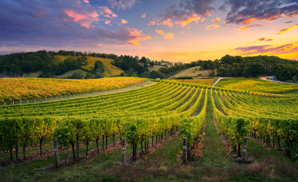
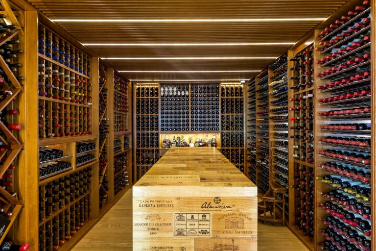
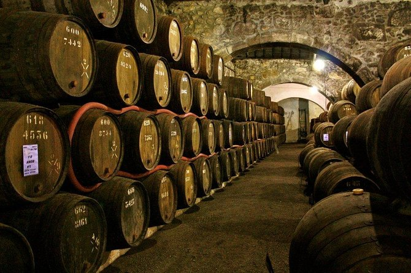
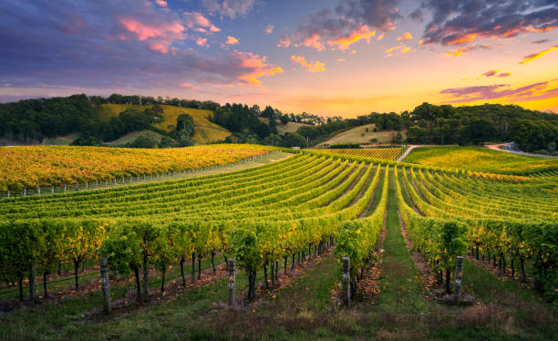
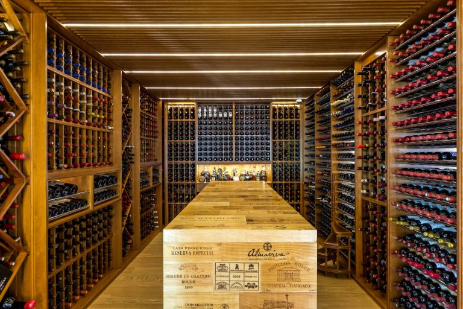
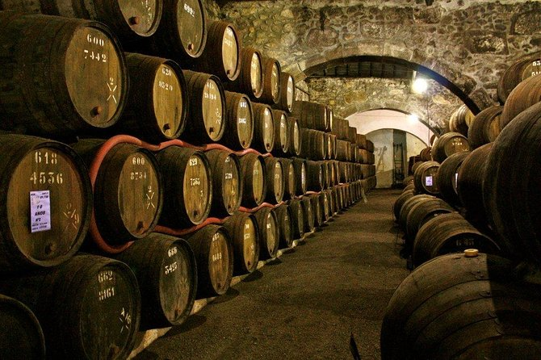

Galeria e Curiosidades
Aqui estão algumas imagens de nossa vinícola e de nossa produção, além de algumas curiosidades sobre o mundo do vinho.


 






Curiosidades sobre vinhos
- Existem mais de 6.000 tipos de uvas viníferas no mundo, cada uma com sabores únicos.
- O vinho tinto, quando consumido com moderação, pode ajudar na saúde do coração graças ao resveratrol.
- A maioria dos vinhos deve ser consumida em até 5 anos; apenas alguns melhoram com o tempo.
- O terroir (solo, clima e região) influencia totalmente o sabor de um vinho, mesmo sendo da mesma uva.